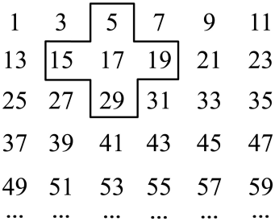
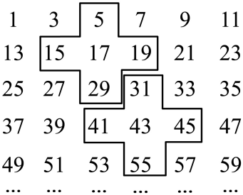
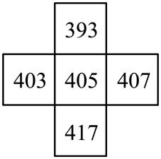
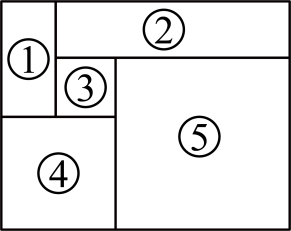
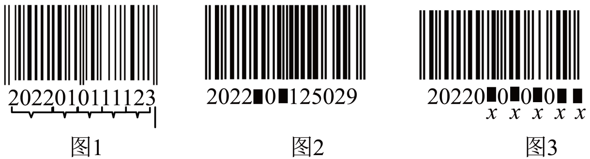

专题3.3 整式的加减（举一反三讲义）
【北师大版2024】

【题型1 判断同类项】 2
【题型2 根据同类项的概念求字母的值】 4
【题型3 合并同类项】 5
【题型4 去括号、添括号】 7
【题型5 整式的加减运算】 8
【题型6 整式的化简求值】 12
【题型7 整式加减中的无关性问题】 15
【题型8 整式加减中的不含某项问题】 18
【题型9 整式加减中的误看问题】 21
【题型10 整式加减中的遮挡问题】 24
【题型11 整式加减中的规律探索】 27
【题型12 整式加减中的新定义问题】 32
【题型13 整式加减中的多结论问题】 34
【题型14 整式加减的应用】 38
 知识点1 同类项
知识点1 同类项
所含字母相同，并且相同字母的指数也相同的项叫作同类项．几个常数项也是同类项．
知识点2 合并同类项
把多项式中的同类项合并成一项，叫作合并同类项．合并同类项后，所得项的系数是合并前各同类项的系数的和，字母连同它的指数不变．
合并同类项的一般步骤：

知识点3 去括号
1. 去括号方法
一般地，一个数与一个多项式相乘，需要去括号，去括号就是用括号外的数乘括号内的每一项，再把所得的积相加．如果括号外的乘数是正数，去括号后原括号内各项的符号与原来的符号相同；如果括号外的乘数是负数，去括号后原括号内各项的符号与原来的符号相反．
2. 依据：分配律a(b+c)=ab+ac.
3. 多层括号的去法：一般由内向外，先去小括号，再去中括号，最后去大括号．
知识点4 整式的加减
整式加减的运算法则：几个整式相加减，如果有括号就先去括号，然后再合并同类项．
应用整式加减的运算法则化简求值时，一般先去括号、合并同类项，再代入字母的值进行计算，简记为“一化、二代、三计算”．在具体运算中，也可以先将同类项合并，再去括号，但是要按运算顺序去做．例如，−2(x−3x+5x−7x+6)=−2(−4x+6)=8x−12．
【题型1 判断同类项】
【例1】（24-25七年级上·北京·期中）多项式a3−a2b+ab2+a2b−ab2+b3中，______ 与______是同类项；______与______是同类项．
【答案】 −a2b a2b ab2 −ab2
【分析】本题考查同类项，根据同类项的定义“所含字母相同，相同字母的指数也相同的项是同类项，几个单独的数字也是同类项”解题即可．
【详解】解：a3−a2b+ab2+a2b−ab2+b3
=a3+−a2b+a2b+ab2−ab2+b3
∴−a2b和a2b是同类项，ab2和−ab2是同类项，
故答案为：−a2b；a2b；ab2；−ab2．
【变式1-1】（24-25七年级上·江苏宿迁·期末）写出一个与−3y2是同类项的单项式，则这个单项式可以是 ．
【答案】y2（答案不唯一）
【分析】根据单项式的定义，同类项的定义即可求解．
【详解】解：根据题意，y2与−3y2是同类项的单项式，
故答案为：y2（答案不唯一）．
【点睛】本题主要考查单项式，同类项的定义，理解并掌握单项式，同类项的定义是解题的关键．
【变式1-2】（24-25七年级上·山东滨州·期末）下列单项式：−a3b2，2a2b33，a2b，ab3中，a2b3的同类项的系数是（ ）
A．−1 B．1 C．2 D．23
【答案】D
【分析】本题考查了同类项和同类项的系数的定义，先根据同类项的定义找到a2b3的同类项，再确定其系数即可．
【详解】解：a2b3的同类项是2a2b33，其系数是23，
故选：D．
【变式1-3】（24-25七年级上·河南郑州·期末）下列各组中的两项，属于同类项的是（ ）
A．−2x2y与2xy2 B．5x2y与−0.5x2z
C．−0.5xy与xyz D．3mn与−4nm
【答案】D
【分析】本题考查了同类项的定义，熟记同类项的定义是解题的关键；
根据同类项的定义：所含字母相同，相同字母的指数相同逐项判断即可求解．
【详解】解：A．−2x2y中x的次数是2，y的次数是1；2xy2中x的次数是1，y的次数是2，相同字母的指数不同，不是同类项，故本选项不符合题意；
B．5x2y含有字母x和y，−0.5x2z含有字母x和z，所含字母不同，不是同类项，故本选项不符合题意；
C．−0.5xy含有字母x和y，xyz含有字母x、y和z，所含字母不同，不是同类项，故本选项不符合题意；
D．3mn与−4nm都含有字母m和n，且m的次数都是1，n的次数也都是1，是同类项，故本选项符合题意；
故选：D．
【题型2 根据同类项的概念求字母的值】
【例2】（24-25七年级上·陕西榆林·阶段练习）单项式7x1−ay与−2x3yb是同类项，则ab的值为（ ）
A．−2 B．−4 C．2 D．4
【答案】A
【分析】本题考查了同类项的定义，解一元一次方程，代数式求值，熟练掌握相关知识点是解题的关键．
由同类项的定义得到1−a=3，b=1，将a=−2,b=1代入ab计算即可．
【详解】解：∵单项式7x1−ay与−2x3yb是同类项，
∴1−a=3,b=1，
∴a=−2，
∴ab=−2×1=−2，
故选：A．
【变式2-1】（24-25七年级上·上海·阶段练习）如果23x6ym与−4xny2是同类项，那么nm= ．
【答案】3
【分析】本题主要考查了同类项的定义，代数式求值，所含字母相同，相同字母的指数也相同的单项式叫做同类项，据此可得m、n的值，再代值计算即可得到答案．
【详解】解；∵23x6ym与−4xny2是同类项，
∴m=2，n=6，
∴nm=62=3，
故答案为：3．
【变式2-2】（24-25七年级上·福建漳州·期中）若−xmy4与112x3yn是同类项，则m−n9的值为（ ）
A．1 B．−1 C．0 D．1或−1
【答案】B
【分析】本题考查了同类项，有理数的乘方运算，解题的关键是掌握这些知识点．根据同类项的定义“所含字母相同，并且相同字母的指数也相同的项叫同类项”可得m=3，n=4，即可得．
【详解】解：∵−xmy4与112x3yn是同类项，
∴m=3，n=4，
∴m−n9=3−49=−1，
故选：B．
【变式2-3】（24-25七年级下·四川雅安·期中）已知23x2mym+1与3xny3是同类项，则m−n的值为 ．
【答案】−2或4．
【分析】本题考查了同类项的定义，绝对值的意义，根据同类项的定义求出m,n，代入即可求解，掌握同类项的定义是解题的关键．
【详解】解：∵23x2mym+1与3xny3是同类项，
∴2m=n，m+1=3，
∴m=2或−4，
当m=2时，n=4，m−n=2−4=−2，
当m=−4时，n=−8，m−n=−4−−8=4，
故答案为：−2或4．
【题型3 合并同类项】
【例3】（24-25七年级上·北京昌平·期中）先合并同类项，再求代数式的值：
已知a−122+b+1=0，求6a2b−3ab2−5a2b+4ab2的值．
【答案】a2b+ab2，14
【分析】本体考查整式的知识，解题的关键是根据非负数的性质，求出a，b的值，再根据整式的加减运算，化简代数式，最后把a，b的值代入，即可．
【详解】解：∵a−122+b+1=0，
∴a−122=0，b+1=0，
∴a=12，b=−1，
6a2b−3ab2−5a2b+4ab2
=a2b+ab2，
把a=12，b=−1，代入a2b+ab2=122×−1+12×(−1)2=14．
【变式3-1】（24-25七年级上·上海崇明·期中）合并同类项：5x2−8x+6−3x2+6x−3= ．
【答案】2x2−2x+3
【分析】本题主要考查了合并同类项，熟记合并同类项法则是解答本题的关键．合并同类项的法则：把同类项的系数相加，所得结果作为系数，字母和字母的指数不变，据此计算即可．
【详解】解：5x2−8x+6−3x2+6x−3
=5x2−3x2+6x−8x+6−3
=2x2−2x+3，
故答案为：2x2−2x+3．
【变式3-2】（24-25七年级上·山西太原·期末）三个连续整数中，若最小的数用m表示，则这三个数的和用含m的代数式表示为 ．
【答案】3m+3
【分析】此题考查了合并同类项，列代数式，由最小的数用m表示，则后两个数为m+1，m+2，然后利用合并同类项法则进行解答即可，掌握知识点的应用是解题的关键．
【详解】解：∵最小的数用m表示，
∴后两个数为m+1，m+2，
∴这三个数的和为m+m+1+m+2=3m+3，
故答案为：3m+3．
【变式3-3】（24-25七年级上·广西贵港·期中）实践探究：根据合并同类项法则，得6x−3x+x=(6−3+1)x=4x．类似的，如果把(a+b)看成一个整体，那么6(a+b)−3(a+b)+(a+b)=(6−3+1)(a+b)=4(a+b)．这种解决问题的思想方法被称为“整体思想”，广泛运用于在多项式的化简与求值中．
据此解答以下问题：
(1)把(a−b)2看成一个整体，合并2(a−b)2−4(a−b)2+3(a−b)2的结果是____；
(2)已知x2−2y=1，求2024x2−4048y+1的值．
【答案】(1)(a−b)2
(2)2025
【分析】本题主要考查了整式的化简求值，学会运用“整体思想”是解题的关键．
（1）按照“整体思想”把(a−b)2看成一个整体，合并同类项即可．
（2）把2024x2−4048y+1变形为2024x2−2y+1然后整体代入x2−2y=1计算即可．
【详解】（1）解：把(a−b)2看成一个整体，
则2(a−b)2−4(a−b)2+3(a−b)2=2−4+3(a−b)2=(a−b)2，
故答案为：(a−b)2．
（2）解：2024x2−4048y+1
=2024x2−2y+1
∵x2−2y=1，
∴原式=2024×1+1
=2025
【题型4 去括号、添括号】
【例4】（24-25八年级上·重庆秀山·期末）在5个字母a，b，c，d，e中（均不为零），不改变字母的顺序，在每相邻两个字母之间都添加一个“+”或者一个“-”组成一个多项式，且从字母a，b之间开始从左至右所添加的“+”或“-”交替依次出现，再在这个多项式中，任意添加两个括号（括号内至少有两个字母，且括号中不再含有括号），添加括号后仍只含有加减运算，然后再进行去括号运算，我们称为“添减括号操作”．
例如：a+b−c+d−e=a+b−c−d−e，a+b−c+d−e=a+b−c−d+e．
下列说法：
①所有的“添减括号操作”共有7种不同运算结果；
②不存在两种“添减括号操作”，使它们的运算结果求和后为0；
③存在“添减括号操作”，使其运算结果与其未加括号之前的多项式相等．
其中正确的个数是（ ）
A．0 B．1 C．2 D．3
【答案】C
【分析】本题主要考查添括号等知识点．
先根据题意列举出此操作的所有结果，即可判定①；所有结果中字母a的系数恒为1，两结果相加a的系数为2，无法为零，即可判定②；通过合理添加括号可使结果与原式相同，正确．
【详解】解：①初始多项式符号交替排列，如a+b−c+d−e．添加两个括号后，可能的结果包括：1． 原式：a+b−c+d−e；2．添加括号如a+b−c+d−e，结果为a+b−c−d−e；3．添加括号如a+b−c+d−e，结果为a+b−c−d+e；同理，符号排列为a−b+c−d+e时，类似操作产生3种结果．总共有3+3=6种不同结果，故①错误．
②无论括号如何添加，所有结果中字母a的系数始终为+1．若存在两种操作结果相加为0，则a的系数需为0，矛盾．故②正确．
③例如，添加括号a+b−c+d−e，去括号后与原式a+b−c+d−e相同．故③正确．
综上，正确的说法为②和③，共2个．
故选C．
【变式4-1】（24-25七年级上·河南南阳·期末）在括号内填上适当的项：3−x2+3xy−y3=3−（ ）．
【答案】x2−3xy+y3
【分析】本题主要考查添括号，熟练掌握添括号的法则是解题的关键．根据添括号的法则进行求解即可．
【详解】解：3−x2+3xy−y3=3−x2−3xy+y3；
故答案为：x2−3xy+y3．
【变式4-2】（24-25六年级上·山东淄博·阶段练习）下列各式中与a−b−c的值不相等的是（ ）
A．a−b+c B．a−b−c C．a−b+−c D．−c−b−a
【答案】B
【分析】本题考查去括号和添括号的知识，注意掌握去括号法则：如果括号外的因数是正数，去括号后原括号内各项的符号与原来的符号相同；如果括号外的因数是负数，去括号后原括号内各项的符号与原来的符号相反．添括号法则：添括号时，如果括号前面是正号，括到括号里的各项都不变号，如果括号前面是负号，括号括号里的各项都改变符号．
根据去括号和添括号的法则求解即可．
【详解】解：A、a−b+c=a−b−c，故本选项不符合题意；
B、a−b−c=a−b+c，故本选项符合题意；
C、a−b+−c=a−b−c，故本选项不符合题意；
D、−c−b−a=a−b−c，故本选项不符合题意；
故选：B．
【变式4-3】（24-25七年级上·全国·随堂练习）p−[q−2p−(p+q)]去括号后应为（ ）
A．−2p B．4p C．2p D．2p−2q
【答案】B
【分析】本题主要考查了整式化简，解题的关键是熟练掌握去括号法则和合并同类项法则．
根据去括号，合并同类项法则进行计算即可．
【详解】解：p−[q−2p−(p+q)]=p−[q−2p−p−q]=p−q+2p+p+q=4p，
故选：B．
【题型5 整式的加减运算】
【例5】（24-25六年级上·上海普陀·期末）已知两个一次式分别是5m−6+3n和−7m+3n−12．
(1)求5m−6+3n与−7m+3n−12的和；
(2)当m和n为正整数时，5m−6+3n减去−7m+3n−12的差能否被6整除？请说明理由．
【答案】(1)−2m+6n−18
(2)能，理由见详解
【分析】本题考查了整式的加减运算，正确掌握相关性质内容是解题的关键．
（1）根据题意列式，然后去括号再合并同类项，即可作答．
（2）根据题意列式，然后去括号再合并同类项，得62m+1，最后结合m为正整数，则2m+1为正整数，即可作答．
【详解】（1）解：依题意，5m−6+3n+−7m+3n−12
=5m−6+3n−7m+3n−12
=−2m+6n−18；
（2）解：能，理由如下：
依题意，5m−6+3n−−7m+3n−12
=5m−6+3n+7m−3n+12
=12m+6
=62m+1
∵m为正整数，
∴2m+1为正整数，
∴62m+1能被6整除，
即当m和n为正整数时，5m−6+3n减去−7m+3n−12的差能被6整除．
【变式5-1】（24-25七年级上·贵州遵义·期末）（1）从下列①②③④中任选3个代数式求和．
①22，②13×3，③−4，④12025
（2）下面是小欣同学整式化简过程：
17．化简：3x2−2y+23y+5x2 解：原式=3x2−6y+6y+5x2第①步 =3x2+5x2+−6y+6y第②步 =8x2−12y第③步 |
小欣同学的化简过程是从第____________步开始出现错误的；
请写出正确的化简过程．
【答案】（1）选取①②③时，和为9；选取①②④时和为6；选取①③④时和为9，选取②③④时和为6
（2）①；化简过程见解析
【分析】本题考查了有理数混合运算，整式加减运算，熟练掌握运算法则是解题关键．
（1）任意选取三个，利用有理数混合运算法则结算即可；
（2）根据去括号的法则即可判断；利用整式的加减法则进行运算即可．
【详解】（1）选取①、②、③3个代数式求和：
22+13×3+−4
=4+1+4
=9；
选取①、②、④3个代数式求和：
22+13×3+12025
=4+1+1
=6；
选取①、③、④3个代数式求和：
22+−4+12025
=4+4+1
=9；
选取②、③、④3个代数式求和：
13×3+−4+12025
=1+4+1
=6；
（2）3x2−2y+23y+5x2
解：原式=3x2−6y+6y+10x2第①步
第①步去第二个括号时，第二项没有乘以2，所以第①步开始出现错误，
故答案为：①；
正确的化简过程是：
3x2−2y+23y+5x2
原式=3x2−6y+6y+10x2
=3x2+10x2+−6y+6y
=13x2．
【变式5-2】学习《整式》后，在一次数学活动中，乐乐对悠悠说：“你在心里想好一个两位数，将个位数字乘5，然后加3，再将所得新数乘2，最后将得到的数加十位数字，把你的结果告诉我，我就知道你心里想的两位数．”
(1)如果悠悠的计算结果是38，那么乐乐的答案是 ；
(2)通过两人的对话，你能判断乐乐说得对吗？请你用多项式的相关知识说明．
【答案】(1)23
(2)乐乐说到对，说明见解析
【分析】本题考查了整式的加减，弄清题意是解本题的关键．
（1）根据题意，列出式子25x+3+y=38，得到结果；
（2）根据题意，得到 25b+3+a=10b+6+a=10b+a+6，得到原数为新数减去6，并且交换十位与个位数字即可得到原数．
【详解】（1）解：设悠悠想的两位数的个位数字为x，十位数字为y，依题意得：
25x+3+y=38，
10x+6+y=38，
10x+y=32，
∵1≤y≤9，0≤x≤9且x，y为整数，
∴x=3,y=2，
∴乐乐的答案为：23，
故答案为：23；
（2）解：设原数为10a+b，依题意得：
5b+3×2+a
=10b+6+a
=10b+a+6，
∴原数为新数减6，并且交换十位与个位数字即可得到原数，
故乐乐说到对．
【变式5-3】（24-25七年级上·山东济宁·期末）已知a，b为有理数，现规定一种新的运算符号，定义aΔb=−a+2b，例如：4Δ5=−4+2×5=6，请根据符号的意义解答下列问题：
(1)求2Δ3Δ4的值；
(2)若m=aΔa2+3a，n=a2+aΔ3a−1，试判断m、n的大小，并说明理由．
【答案】(1)8
(2)m>n，理由见解析
【分析】本题主要考查了有理数的四则混合计算，整式的加减计算，熟知新定义是解题的关键：
（1）根据所给新定义先计算出3Δ4=5，再计算出2Δ5的结果即可；
（2）根据新定义结合整式的加减计算法则求出m、n的结果，再利用作差法求出m−n的结果即可得到结论．
【详解】（1）解：由题意得，3Δ4=−3+2×4=5，
∴2Δ3Δ4
=2Δ5
=−2+2×5
=8；
（2）解：m>n，理由如下：
∵m=aΔa2+3a，n=a2+aΔ3a−1，
∴m=−a+2a2+3a=−a+2a2+6a=2a2+5a，n=−a2+a+23a−1=−a2−a+6a−2=−a2+5a−2，
∴m−n=2a2+5a−−a2+5a−2=2a2+5a+a2−5a+2=3a2+2，
∵a2≥0，
∴m−n=3a2+2>0，
∴m>n．
【题型6 整式的化简求值】
【例6】（24-25七年级上·广东深圳·期中）在如图所示，每个小三角形的三个顶点上的数字之和都与中间正方形四个顶点上的数字之和相等，已知n=5，m=−2，那么a+b−c−d= ．

【答案】14
【分析】本题主要考查了整式的化简求值，先求出x+y+m+n=x+y+3。进而根据依题意得a=y+5，b=x+5，c=x−2，d=y−2，由此可得a+b−c−d的值．
【详解】解：∵n=5，m=−2，
∴中间正方形四个顶点上的数字之和为：x+y+m+n=x+y+3，
又∵每个小三角形的三个顶点上的数字之和都与中间正方形四个顶点上的数字之和相等，
∴a+x−2=x+y+3，b+y−2=x+y+3，c+y+5=x+y+3，d+x+5=x+y+3，
∴a=y+5，b=x+5，c=x−2，d=y−2，
∴a+b−c−d=y+5+x+5−x−2−y−2=y+5+x+5−x+2−y+2=14．
故答案为：14．
【变式6-1】（24-25七年级上·安徽合肥·期中）已知m−n=3，p+q=2，则n+2p−m−2q的值为（ ）
A．−5 B．5 C．−1 D．1
【答案】D
【分析】本题考查了整式的加减及求代数式的值，去括号，将代数式化简为−m−n+2p+q，将已知等式代入，即可求解．
【详解】解：∵m−n=3，p+q=2，
∴n+2p−m−2q
=n+2p−m+2q
=−m−n+2p+q
=−3+2×2
=1，
故选：D．
【变式6-2】（24-25七年级上·上海·期中）我们约定：上方相邻两数之和等于这两数下方箭头共同指向的数，例如：在图1中，即5+6=11，若a,b满足|a−3|+(b+1)2=0，则图2中y的值为 ．

【答案】27
【分析】本题考查了整式的加减与化简求值；先用含有a，b的代数式表示m和n，再表示出y即可．根据绝对值和完全平方的非负性求出a和b的值即可解决问题．
【详解】由题知，
m=ab2+a2b+ab2=a2b+2ab2；
n=a2b+ab2−3(a2b−a)=a2b+ab2−3a2b+3a=−2a2b+ab2+3a；
所以y=m+n=a2b+2ab2−2a2b+ab2+3a=−a2b+3ab2+3a．
因为|a−3|+(b+1)2=0，
所以a−3=0，b+1=0，
则a=3，b=−1，
所以y=−32×−1+3×3×−12+3×3=27．
故答案为：27．
【变式6-3】（24-25九年级上·江苏南通·期中）已知3x2−4xy+7y2−2m=−17，x2+5xy+6y2−m=12，则式子x2−14xy−5y2的值为（ ）
A．−41 B．−412 C．−72 D．72
【答案】A
【分析】本题主要考查了整式的化简求值，先把第二个等式两边乘以2，再用第一个等式减去第二个等式两边乘以2后的结果即可得到答案．
【详解】解；∵x2+5xy+6y2−m=12，
∴2x2+5xy+6y2−m=24，即2x2+10xy+12y2−2m=24，
∴3x2−4xy+7y2−2m−2x2+10xy+12y2−2m=−17−24=−41，
∴3x2−4xy+7y2−2m−2x2−10xy−12y2+2m=−41，
∴x2−14xy−5y2=−41，
故选：A．
【题型7 整式加减中的无关性问题】
【例7】若代数式2x2+ax−y+6−bx2−3x+5y−1的值与字母x的取值无关，则代数式2a3−2b2−a3−3b2的值为 ．
【答案】−23
【分析】将2x2+ax−y+6−bx2−3x+5y−1化简得2−bx2+a+3x−6y+7，从而可求a=−3b=2，再将2a3−2b2−a3−3b2化简，代值计算即可．
【详解】解：2x2+ax−y+6−bx2−3x+5y−1
=2x2+ax−y+6−bx2+3x−5y+1
=2−bx2+a+3x−6y+7；
因为值与字母x的取值无关，
所以2−b=0a+3=0，
解得：a=−3b=2，
2a3−2b2−a3−3b2
=2a3−2b2−a3+3b2
=a3+b2；
当a=−3，b=2时，
原式=−33+22
=−23；
故答案：−23．
【点睛】本题主要考查了整式化简求值及多项式的值与某个字母无关的意义，理解多项式的值与某个字母无关的意义是解题的关键．
【变式7-1】（24-25七年级上·重庆九龙坡·期末）已知无论x，y取什么值，多项式2x2−my+9−nx2−5y−4的值都等于定值13，则m+n= ．
【答案】7
【分析】本题考查了整式的化简与整式的无关型，先将整式化简，再让含有x和y的项系数为0，得出m和n的值，即可求解．
【详解】解：2x2−my+9−nx2−5y−4
=2x2−my+9−nx2+5y+4
=2−nx2+5−my+13，
∵多项式2x2−my+9−nx2−5y−4的值都等于定值13，
∴2−n=0，5−m=0，
解得n=2，m=5，
∴m+n=5+2=7，
故答案为：7．
【变式7-2】（24-25七年级上·湖北武汉·期末）已知a，b，c，d为常数，P=ax2+by+x，Q=6x2+3y+cx，若3P+Q的取值与无关，P−2Q是不含y的多项式，且bx−a+dx−c=5恒成立，则ad+bc的值为（ ）
A．−6 B．0 C．6 D．5
【答案】A
【分析】本题考查了整式的加减、代数式求值，解决本题的关键是求出3P+Q、P−2Q．根据题意，求出3P+Q=3a+6x2+3b+3y+3+cx，且3P+Q的取值与x无关，所以3a+6=0，3+c=0，即a=−2，c=−3；P−2Q=a−12x2+b−6y+1−2cx，因为P−2Q是不含y的多项式，所以b−6=0，即b=6；因为bx−a+dx−c=5，将a、b、c代入到式子中，可得6x−(−2)+dx−(−3)=5，即(6+d)x=0，因为式子恒成立，所以6+d=0，即d=−6，将a、b、c、d代入求出ad+bc．
【详解】解：因为P=ax2+by+x，Q=6x2+3y+cx，
所以3P+Q
=3(ax2+by+x)+6x2+3y+cx
=3ax2+3by+3x+6x2+3y+cx
=3a+6x2+3b+3y+3+cx，
因为3P+Q的取值与x无关，
所以3a+6=0，3+c=0，
得：a=−2，c=−3；
P−2Q
=ax2+by+x−2(6x2+3y+cx)
=ax2+by+x−12x2−6y−2cx
=a−12x2+b−6y+1−2cx；
因为P−2Q是不含y的多项式，
所以b−6=0，
即b=6，
因为bx−a+dx−c=5，
即6x−(−2)+dx−(−3)=5，
(6+d)x=0，
因为该式子恒成立，
所以6+d=0，
即d=−6，
ad+bc
=(−2)×(−6)+6×(−3)
=12−18
=−6．
故选：A．
【变式7-3】（24-25七年级下·浙江金华·期中）如图，小长方形纸片的长为a，宽为b，且a>b，将7张纸片按图示不重叠的放在长方形ABCD内，未被覆盖的部分恰好被分割为两个长方形，面积分别为S1和S2．

（1）当a=8，b=2，AD=20时，S2−S1的值为 ；
（2）若AB长度保持不变，AD变长，将这7张小长方形纸片还按照同样的方式放在新的长方形ABCD内，当3S2−5S1的值与AD的长度无关时，a、b满足的关系式是 ．
【答案】 24 a=5b
【分析】本题考查整式加减运算的实际应用．
（1）由图可知：AD=BC=20,AB=CD=a+3b，确定两个未被覆盖的长方形的长和宽，求出S2,S1，即可；
（2）设AD=x，求出3S2−5S1的值，根据3S2−5S1的值与AD的长度无关，得到x的系数为0，进行求解即可．
【详解】解：（1）由图可知：AD=BC=20,AB=CD=a+3b=14，
∴S1=3b×AD−a=3×2×20−8=72，S2=a×BC−4b=8×20−8=96，
∴S2−S1=96−72=24；
故答案为：24；
（2）设AD=x，
则：3S2−5S1=3ax−4b−5×3bx−a
=3ax−12ab−15bx+15ab
=3a−15bx+3ab；
∵3S2−5S1的值与AD的长度无关，
∴3a−15b=0，
∴a=5b；
故答案为：a=5b．
【题型8 整式加减中的不含某项问题】
【例8】（24-25七年级上·重庆·期末）已知关于x的多项式A、B，其中A=5mx2+2x−3，B=x2−nx+1（m，n为常数），若A−2B的结果不含x2项和x项，则m+n的值为（ ）
A．75 B．−75 C．35 D．−35
【答案】D
【分析】本题考查整式的加减运算以及不含某项的问题．根据整式的减法运算法则可列A−2B=5mx2+2x−3−2x2−nx+1，化简后，x项和x2项的系数为零，列式求解出m，n，再代入m+n中计算即可．
【详解】解：∵A=5mx2+2x−3，B=x2−nx+1，
∴A−2B=5mx2+2x−3−2x2−nx+1
=5mx2+2x−3−2x2+2nx−2
=5m−2x2+2+2nx−5
∵A−2B的结果不含x2项和x项，
∴5m−2=0，2+2n=0
解得：m=25，n=−1，
∴m+n=25+−1=25−1=−35，
故选：D．
【变式8-1】（24-25七年级上·四川南充·期中）若关于a、b的多项式22a2+ab−3b2与−3a2+mab+2b2的和不含ab，则m的值是 ．
【答案】23
【分析】本题考查了多项式的和中不含某项的条件；求出多项式的和为a2+2−3mab−12b2，由多项式中不含某项的条件，即可求解；理解“多项式中不含某一项就是使得这一项的系数为零．”是解题的关键．
【详解】解：由题意得
22a2+ab−3b2−3a2+mab+2b2
=4a2+2ab−6b2−3a2−3mab−6b2
=a2+2−3mab−12b2
∴不含ab，
∴2−3m=0，
解得：m=23，
故答案为：23．
【变式8-2】（24-25七年级下·甘肃兰州·期中）已知关于x、y的多项式5x2−2xy2−3xy+4y2+9xy−2y2−2mxy2+7x2
(1)若该多项式不含三次项，求m的值；
(2)在（1）的条件下，当x2+y2=13，xy=−6时，求该多项式的值．
【答案】(1)m=1
(2)46
【分析】本题考查了整式加减的化简求值，多项式的概念，代数式求值，掌握相关运算法则是解题关键．
（1）根据去括号和合并同类项法则将多项式化简，再根据不含三次项可知，三次项的系数为0，即可求出m的值；
（2）由（1）可得，该多项式为−2x2−12xy−2y2，再整体代入计算求值即可．
【详解】（1）解：5x2−2xy2−3xy+4y2+9xy−2y2−2mxy2+7x2，
=5x2−2xy2−3xy−4y2−9xy−2y2−2mxy2−7x2
=5x2−2xy2−3xy−4y2−9xy+2y2+2mxy2−7x2
=−2x2+2m−2xy2−12xy−2y2
∵该多项式不含三次项，
∴2m−2=0，
∴m=1；
（2）解：由（1）可得，该多项式为−2x2−12xy−2y2，
当x2+y2=13，xy=−6时，
−2x2−12xy−2y2=−2x2+y2−12xy=−2×13−12×−6=46．
【变式8-3】（24-25七年级上·四川成都·期末）已知：A=3x2+kxy+y−1与B=y2−xy+13x．
(1)若−2A−22B−A−A中不含xy项，求k的值；
(2)若x−1=3，y2=9，x−y=y−x，且A−B=0，求k的值．
【答案】(1)−4
(2)−118
【分析】本题考查整式的运算．
（1）先化简−2A−22B−A−A，再将整式A、B代入化简，再根据−2A−22B−A−A中不含xy项，可求得k的值；
（2）先根据已知条件得出x、y的值，再将其代入A−B=0，然后解方程可得k的值．
【详解】（1）解：−2A−22B−A−A
=−2A−22B−A+A
=−2A−4B+2A+A
=A−4B，
∵A=3x2+kxy+y−1，B=y2−xy+13x，
∴A−4B
=3x2+kxy+y−1−4y2−xy+13x
=3x2+kxy+y−1−4y2+4xy−43x
=3x2−4y2+k+4xy−43x+y−1，
∵−2A−22B−A−A中不含xy项，
∴k+4=0，
∴k=−4；
（2）解：∵x−1=3，y2=9，
∴x−1=±3，y=±3，
∴x=4或−2，
∵x−y=y−x，
∴y−x≥0，
∴y≥x，
∴y=3，x=−2，
∵A−B=0，即A=B，
∴3x2+kxy+y−1=y2−xy+13x，
∴3×−22+−2×3k+3−1=32−−2×3+13×−2，
解得k=−118．
【题型9 整式加减中的误看问题】
【例9】有一道题目是一个多项式A减去多项式2x2+5x−3，小胡同学将2x2+5x−3抄成了2x2+5x+3，计算结果是−x2+3x−7，这道题目的正确结果是（ ）
A． x2+8x−4 B．−x2+3x−1 C．−3x2−x−7 D． x2+3x−7
【答案】B
【分析】此题主要考查了整式的加减，正确合并同类项是解题关键．
直接利用整式的加减运算法则得出A，进而利用整式的加减运算法则得出这道题目的正确结果．
【详解】解：由题意可得：A−2x2+5x+3=−x2+3x−7，
则A=−x2+3x−7+2x2+5x+3
=x2+8x−4，
故这道题目的正确结果是：
x2+8x−4−2x2+5x−3
=x2+8x−4−2x2−5x+3
=−x2+3x−1．
故选：B．
【变式9-1】（24-25七年级上·安徽安庆·期中）小明做一道数学题“已知两个多项式A、B．A=⋯，B=x2+3x−2，计算3A+B”，小明误把“3A+B”看成“A+3B”，求得的结果为5x2−2x+3．
(1)请求出3A+B的正确结果；
(2)若多项式C=mx2−nx+1且A−C的结果不含x2项和x项，求m、n的值．
【答案】(1)7x2−30x+25
(2)m=2，n=11
【分析】本题考查了整式的运算法则，熟练掌握以上知识是解题的关键．
（1）先根据条件求出多项式A，然后将A和B代入3A+B中即可求出答案．
（2）将A和C代入A−C中，合并同类项为=2−mx2+n−11x+8，再根据A−C的结果不含x2和x项，即可得到2−m=0，n−11=0，求解即可得到m、n的值．
【详解】（1）解：∵A+3B=A+3x2+3x−2=5x2−2x+3，
∴A=2x2−11x+9，
∴3A+B=32x2−11x+9+x2+3x−2，
=7x2−30x+25；
（2）解：A−C=2x2−11x+9−mx2−nx+1，
=2−mx2+n−11x+8，
∵ A−C的结果不含x2和x项，
∴2−m=0，n−11=0，
解得：m=2，n=11．
【变式9-2】（24-25七年级上·四川南充·期中）已知多项式B=3x2y−2xy+x+2，欣欣在计算“A+B”时， 误看成了“A−B”， 得到结果为6x2y+4xy−2x−1．
(1)求多项式A；
(2)请你求出的正确答案(写出计算过程) ．
【答案】(1)9x2y+2xy−x+1
(2)12x2y+3
【分析】本题主要考查的是整式的加减，熟知整式加减的实质是去括号、合并同类项是解答此题的关键．
（1）根据B=3x2y−2xy+x+2，A−B=6x2y+4xy−2x−1列出代数式，去括号合并同类项即可；
（2）根据A=9x2y+2xy−x+1，B=3x2y−2xy+x+2列出代数式，去括号合并同类项求出结果．
【详解】（1）解：∵多项式B=3x2y−2xy+x+2，A−B=6x2y+4xy−2x−1，
∴A=6x2y+4xy−2x−1+3x2y−2xy+x+2
=6x2y+4xy−2x−1+3x2y−2xy+x+2
=9x2y+2xy−x+1；
（2）解：A+B
=9x2y+2xy−x+1+3x2y−2xy+x+2
=9x2y+2xy−x+1+3x2y−2xy+x+2
=12x2y+3．
【变式9-3】（24-25七年级上·河北廊坊·期末）老师在黑板上书写了一个计算题目，并用左手遮挡了多项式A的二次项系数．如图：
已知两个多项式A=x2−4x，B=3x2+3x−2，试求A+3B． |
然后告知该题A+3B的正确答案是x2+5x−6．
(1)请求出A中被遮挡的二次项系数．
(2)老师又给出了一个多项式C，并要求求出A−C的结果．小马虎在求解时，误把“A−C”看成“A+C”，进而求出的答案为x2−7x−3．现请你修正小马虎的错误，求出“A−C”的正确答案．
【答案】(1)−8
(2)−17x2−x+3
【分析】本题考查了整式的加减混合运算，多项式项的系数；
（1）由题意得A=x2+5x−6−3B，求出A，即可求解；
（2）先由C=x2−7x−3−A求出C，再计算A−C，即可求解；
掌握整式加减运算的步骤是解题的关键．
【详解】（1）解：由题意得
A=x2+5x−6−3B
=x2+5x−6−33x2+3x−2
=x2+5x−6−9x2−9x+6
=−8x2−4x，
∴ A中被遮挡的二次项系数为−8；
（2）解：由题意得
C=x2−7x−3−A
=x2−7x−3−−8x2−4x
=x2−7x−3+8x2+4x
=9x2−3x−3，
∴A−C
=−8x2−4x−9x2−3x−3
=−8x2−4x−9x2+3x+3
=−17x2−x+3．
【题型10 整式加减中的遮挡问题】
【例10】印卷时，工人不小心把一道化简题前面的一个数字遮住了，结果变成■x2y−[5xy2−2(−23xy+32x2y)−43xy]+5xy2.
(1)某同学辨认后把“■”猜成10，请你算算他的结果是多少？
(2)老师说“你猜错了，我看到题目遮挡的数字是单项式−4x2y3的系数和次数之积”，那么被遮挡住的数字是几？
(3)若化简结果是一个常数，请你再算遮挡的数字又是多少？
【答案】(1)13x2y
(2)−4
(3)−3
【分析】（1）把“■”换成10，原式去括号合并即可得到结果；
（2）求出单项式的系数和次数之积，确定出遮挡部分即可；
（3）设遮挡部分为a，原式去括号合并后，根据化简结果为常数，确定出a的值即可．
【详解】（1）解：根据题意得：原式＝10x2y−[5xy2−2(−23xy+32x2y)−43xy]+5xy2
＝10x2y−5xy2−43xy+3x2y+43xy+5xy2
＝13x2y；
（2）解：是单项式−4x2y3的系数和次数之积为：−43×3=−4，
答：遮挡部分应是−4；
（3）解：设遮挡部分为a，
原式＝ax2y−[5xy2−2(−23xy+32x2y)−43xy]+5xy2
＝ax2y−5xy2−43xy+3x2y+43xy+5xy2
＝(a+3)x2y；
因为结果为常数，所以a+3=0
所以遮挡部分为−3．
【点睛】此题考查了整式的加减和代数式的值与字母无关问题，熟练掌握运算法则是解本题的关键．
【变式10-1】（24-25七年级上·河北唐山·期末）小明的家庭作业中有一道化简题：∗x2+32x+4−234x+3x2−2发现系数“*”印刷不清楚．
(1)他把“*”猜成2，请帮助小明化简：2x2+32x+4−234x+3x2−2；
(2)老师给出标准答案的结果是常数．通过计算说明原题中“*”是多少？
【答案】(1)−4x2+8
(2)6
【分析】本题考查了整式的加减、整式的加减中的无关题型，熟练掌握整式的加减的运算步骤是解此题的关键．
（1）去括号、合并同类项即可得到答案；
（2）设“*”是M，原式去括号、合并同类项得出M−6x2+8，再根据标准答案的结果是常数，得出M−6=0，由此即可得出答案．
【详解】（1）解：2x2+32x+4−234x+3x2−2
=2x2+32x+4−32x−6x2+4
=−4x2+8；
（2）解：设*为M，则原式为
Mx2+32x+4−234x+3x2−2
=Mx2+32x+4−32x−6x2+4
=M−6x2+8，
因为：结果为常数，
所以：不含x的项，即M−6=0，
所以：M=6．
【变式10-2】（24-25七年级上·陕西咸阳·期末）某数学兴趣小组利用A，B，C，D四张卡片做游戏，卡片上分别写有已经化为最简的代数式，C，D两张卡片上有部分内容被遮挡住了，但知道它们是A，B两张卡片上代数式的和或差．

请通过计算分别求出C，D卡片上的代数式．
【答案】C,D卡片上的代数式分别为：−2x2+4x−5，x2−2x+3
【分析】本题考查整式的加减运算，根据整式的加减运算法则，分别求出A,B两张卡片上的代数式的和与差，即可得出结果．
【详解】解：−12x2+x−1+32x2−3x+4=x2−2x+3；
−12x2+x−1−32x2−3x+4
=−12x2+x−1−32x2+3x−4
=−2x2+4x−5；
∵C卡片上的二次项为：−2x2，
∴卡片C上的代数式为：−2x2+4x−5；
∵D的常数项为3，
∴卡片D上的代数式为：x2−2x+3．
【变式10-3】（2025·河北·模拟预测）老师在黑板上给小明写出了一道计算题，如图所示，系数“圆”没有写清楚．
计算：■x2+6x+8−32x+x2−1 解： |
(1)小明认为“■”是“−1”，请求出这道题的结果；
(2)根据下面小刚对小明的提示，完成下列问题：
①小刚说：“当x的值是−1时，这道题的值为−2”，求此时系数“■”的值；
②小刚说：“这道题最后的结果是个常数”，求此时系数“■”的值．
【答案】(1)−4x2+11
(2)①−10；②3
【分析】本题考查整式的加减，熟练掌握整式的加减运算法则是解题的关键．
（1）把■=−1代入式子，运用去括号法则，合并同类项法则进行化简即可；
（2）设系数“■”的值为a，将式子化简为a−3x2+11．①由当x的值是−1时，这道题的值为−2，可得a−3×−12+11=−2，求解即可．②由这道题最后的结果是个常数，可得a−3=0，求解即可．
【详解】（1）解：当“■”是“−1”时，该多项式为：−x2+6x+8−32x+x2−1，
∴−x2+6x+8−32x+x2−1
=−x2+6x+8−6x−3x2+3
=−4x2+11．
（2）解：设系数“■”的值为a，则
ax2+6x+8−32x+x2−1
=ax2+6x+8−6x−3x2+3
=a−3x2+11，
①∵当x的值是−1时，这道题的值为−2，
∴a−3×−12+11=−2，
∴a=−10，
∴此时系数“■”的值为−10．
②∵这道题最后的结果是个常数，
∴a−3=0，
∴a=3，
∴此时系数“■”的值为3．
【题型11 整式加减中的规律探索】
【例11】（2025·安徽合肥·一模）宇宙中存在一种神秘的黑洞天体，数学中也有一种神秘的“黑洞”数字，数学兴趣小组在研究“黑洞”数字时，在0到9之间，任取一组不全相等的三个数字，从大到小排列得到最大数，再从小到大排列得到最小数，然后用最大数减去最小数，得到一个新数，再按照上述方式重新排列，再相减，再得到一个新数…一直重复操作，
例如．
第1组：数字1，2，0，则210−12=198；
第2组：数字1，9，8，则981−189=792；
第3组：数字7，9，2，则972−279=693；
第4组：数字6，9，3，则_________________．
(1)根据规律，补充第4组横线的内容；
(2)小组成员A发现：任取这样一组不全相等的三个数字，经过有限次上述“重排求差”操作后，最终会得到一个确定的“黑洞”数字，这个数是________________；
(3)小组成员B发现：在上述“重排求整”操作中，最大数和最小数的差能被99整除，推过程如下：
设一组三个数字为a，b，c，不妨设a≥b≥c，且a，b，c不全相等，最大数可表示为__________________，最小数可表示为___________________，则最大数−最小数=99（____________），所以最大数和最小数的差能被99除．
【答案】(1)963−369=594
(2)495
(3)100a+10b+c，100c+10b+a，a−c
【分析】此题考查了数字规律问题，列代数式，有理数的减法，整式的加减的应用，解题的关键是正确分析题意．
（1）根据题意列式求解即可；
（2）根据题意继续写出第5组和第6组数字，进而找到规律求解即可；
（3）根据题意得到最大数可表示为100a+10b+c，最小数可表示为100c+10b+a，然后作差求解即可．
【详解】（1）根据题意得，
第4组：数字6，9，3，则963−369=594；
（2）第5组：数字5，9，4，则954−459=495；
第6组：数字5，9，4，则954−459=495；
∴最终会得到一个确定的“黑洞”数字，这个数是495；
（3）设一组三个数字为a，b，c，不妨设a≥b≥c，且a，b，c不全相等，
最大数可表示为100a+10b+c，最小数可表示为100c+10b+a，
∴100a+10b+c−100c+10b+a
=100a+10b+c−100c−10b−a
=99a−99c
=99a−c
∴所以最大数和最小数的差能被99除．
【变式11-1】（24-25七年级上·贵州安顺·期末）将连续的奇数1，3，5，7，…，排成如下的数表：十字框框出5个数（如图所示），问：

(1)十字框框出5个数的和与框子正中间的数17有什么关系？
(2)若将十字框上下左右平移，可框住另外5个数，这5个数还有这种规律吗？
(3)若设中间的数为a，用代数式表示十字框框住的5个数字之和；
(4)十字框框住的5个数之和能等于2024吗？能等于2025吗？若能，请分别写出十字框框住的5个数．
【答案】(1)十字框框住的5个数的和是17的5倍
(2)若将十字框上下左右平移，可框住另外5个数，这5个数的和仍然是中间的数的5倍
(3)5a
(4)这5个数分别为393、403、405、407、417
【分析】本题主要考查列代数式、数字的规律及一元一次方程的应用，根据数列的构成特点得出5个数之间的关系，列出方程依据条件取舍是解题的关键．
（1）求出这5个数的和即可得；
（2）根据表中的数，易发现另外的四个数中，上下的数相差是12，左右的数相差是2．根据这一关系进行表示各个数，再求和；
（3）若设中间的数为a，则上面的为a−12，下面的为a+12，左面的为a−2，右面的为a+2，据此可得；
（4）根据五个数的和为2024或2025列方程求解后，依据数列为奇数列即可判断．
【详解】（1）解：∵5+15+17+19+29=85=17×5，
∴十字框框住的5个数的和是17的5倍；
（2）解：如图所示：

31+41+43+45+55=43×5，∴若将十字框上下左右平移，可框住另外5个数，这5个数的和仍然是中间的数的5倍；
（3）解：若设中间的数为a，则上面的为a−12，下面的为a+12，左面的为a−2，右面的为a+2，
∴a+(a−2)+(a+2)+(a−12)+(a+12)=5a；
（4）解：5个数之和不能等于2024，
当5a=2024时，得a=405.8，
∵a不是奇数，
∴5个数之和不能等于2024；

5个数之和能等于2025，
当5a=2025时，得a=405，
∵a是奇数，
∴5个数之和能等于2025，这5个数分别为393、403、405、407、417．
【变式11-2】（24-25七年级上·湖北十堰·期末）若干个“△”和“★”按照一定规律排列成下列图形．图1中“△”的个数为1=3×1−2，“★”的个数为3=6×1−3；图2中“△”的个数为4=3×2−2，“★”的个数为9=6×2−3；图3中“△”的个数为7=3×3−2，“★”的个数为15=6×3−3，…，

(1)按上图所示规律，图6中有_________个“△”，图6中有_________个“★”；
(2)按上图所示规律，图n中有_________个“△”，图n中有_________个“★”；
(3)设图n中有x个“△”，y个“★”．
①当x=28时，y的值是多少？
②试求y与x之间的数量关系．
【答案】(1)16，33
(2)3n−2，6n−3
(3)①y=57，②y=2x+1
【分析】本题主要考查图形的变化类，解答本题的关键是发现题目中“△”和“★”的个数的变化规律，利用数形结合的思想作答．
（1）根据每组图形规律列出点数即可求得；
（2）根据第一问列出的点数特点总结规律即可；
（3）①令3n−2=28解得n=10，再代入6n−3即可得y的值；
②用y−2x消去n，即可得y与x之间的数量关系．
【详解】（1）解：按上图所示规律得：
图4中“△”的个数为10=3×4−2，“★”的个数为21=6×4−3；
图5中“△”的个数为13=3×5−2，“★”的个数为27=6×5−3；
图6中“△”的个数为16=3×6−2，“★”的个数为33=6×6−3；
故答案为：16，33；
（2）解：按上图所示规律，图n中“△”的个数为3n−2，“★”的个数为6n−3，
故答案为：3n−2，6n−3；
（3）解：①当x=28时，3n−2=28，
解得，n=10，
此时，y=6n−3=6×10−3=57，
②∵x=3n−2，y=6n−3，
∴y−2x=6n−3−23n−2=6n−3−6n+4=1，
∴y=2x+1．
【变式11-3】定义数组的T变换：依次排列的一组数，对任意相邻的两个数，都用右边的数减去左边的数，所得之差写在两个数之间，可产生一个新数组．以数组[2,8]为例，步骤如下：
①第1次T变换后得到数组[2,6,8]；
②第2次T变换后得到数组[2,4,6,2,8]；……
则数组[3,9]第4次T变换后得到的数组中所有数的和为 ；
若一组有理数[a,b]，这组数经过2024次T变换后，利用你所观察的规律，这组数的和为 ．（用含有a，b的式子表示并化简）
【答案】 36 2025b−2023a/−2023a+2025b
【分析】本题主要考查了数字变化的规律及列代数式，能根据所给变换方式发现每次变换后数组中各数之和的变化规律是解题的关键．根据所给变换方式，依次进行计算，发现规律即可．
【详解】解：由题知，
数组[3,9]第1次T变换后得到的数组为[3,6,9]，数组中所有数的和为：3+6+9=18；
数组[3,9]第2次T变换后得到的数组为[3,3,6,3,9]，数组中所有数的和为：3+3+6+3+9=24；
数组[3,9]第3次T变换后得到的数组为[3,0,3,3,6,−3,3,6,9]，数组中所有数的和为：3+0+3+3+6−3+3+6+9=30；
数组[3,9]第4次T变换后得到的数组为[3,−3,0,3,3,0,3,3,6,−9,−3,6,3,3,6,3,9]，数组中所有数的和为：3−3+0+3+3+0+3+3+6−9−3+6+3+3+6+3+9=36．
当一组有理数为[a,b]时，
第1次T变换后，这组数的和为：a+b−a+b=2b；
第2次T变换后，这组数的和为：a+b−2a+b−a+a+b=3b−a；
第3次T变换后，这组数的和为：a+b−3a+b−2a+a+b−a+2a−b+a+b−a+b=4b−2a；
…，
由此可见，每次T变换后，所得数组的和增加b−a，
所以2024次T变换后，这组数组的和为：2b+2023b−a=2025b−2023a．
故答案为：36，2025b−2023a．
【题型12 整式加减中的新定义问题】
【例12】（24-25七年级上·广东深圳·期中）定义：若a+b=m，则称a与b是关于m的平衡数．例如：若a+b=2，则称a与b是关于2的平衡数．若a=2x2−3x2+x−4，b=2x−3x−4x+x2−2，那么a与b是关于（ ）的平衡数．
A．−2 B．2 C．−4 D．4
【答案】A
【分析】本题考查新定义，整式的加减运算，理解新定义，掌握整加减运算法则是解题的关键．
先化简a、b，再计算出a+b的值，即可由新定义求解．
【详解】解：∵a=2x2−3x2+x−4=2x2−3x2−3x−4=−x2−3x−4，
b=2x−3x−4x+x2−2=2x−3x+4x+x2+2=x2+3x+2，
∴a+b=−x2−3x−4+x2+3x+2=−2
∵若a+b=m，则称a与b是关于m的平衡数．
∴a与b是关于−2的平衡数
故选：A．
【变式12-1】文化情境·数学文化现代的数学符号体系，不仅使得数学语言变得简洁明了，还能更好地帮助人们总结出便于运算的各种运算法则，简明地揭示数量之间的相互关系．我国在1905年清朝学堂的课本中还用“五丁二⊤三丙二⊥二七甲二乙二”来表示相当于d25−c23+a2b227的代数式，观察其中的规律，化简“六六乙二⊥三乙二⊤甲丙二”，后得（ ）
A．4b23−c2a B．2b23+c2a C．4b2−ac2 D．−2b2+ac2
【答案】A
【分析】本题主要考查了整式加减运算的应用，明确题意，得到准确得到规律是解题的关键．
根据题意可得⊤代表减法，⊥代表加法，甲、乙、丙、丁分别对应小写英文字母a、b、c、d，二表示平方，然后汉字表达式中分子和分母刚好与代数式中的分子分母互换，据此可得答案．
【详解】解：根据题意得：“六六乙二⊥三乙二⊤甲丙二”来表示相当于6b26+b23−c2a的代数式，
6b26+b23−c2a=b2+13b2−c2a=4b23−c2a，
故选：A．
【变式12-2】（24-25七年级上·河北保定·期末）对于任意式子A，B，定义：AΦB=3A−2B．当a=−1时，式子13a−4Φ−a2+3a+2的值是（ ）
A．−7 B．−9 C．7 D．9
【答案】B
【分析】本题考查了整式的加减中的化简求值，熟练掌握整式的运算法则是解题的关键．
根据新定义结合整式的加减计算法则求出13a−4Φ−a2+3a+2的结果，再将a=−1代入求值即可．
【详解】解：由题意得：
13a−4Φ−a2+3a+2
=313a−4−2−a2+3a+2
=a−12+2a2−6a−4
=2a2−5a−16，
当a=−1时，
2a2−5a−16=2×−12−5×−1−16=2+5−16=−9，
故选：B．
【变式12-3】（24-25七年级上·湖南长沙·期末）定义一种新运算：abcd=ad−bc．如：2345=2×5−3×4=−2．若−x+1k3−x2的值与x的取值无关，则−x+1k3−x2的值为 ．
【答案】−4
【分析】本题考查了有理数的新定义运算，整式加减无关型问题，代数式求值，理解新定义运算是解题的关键．先化简−x+1k3−x2，然后根据−x+1k3−x2的值与x的取值无关，可以得到k的值，然后即可求得所求式子的值．
【详解】解：由题意可得，
−x+1k3−x2
=2(−x+1)−k(3−x)
=−2x+2−3k+kx
=−2+kx+2−3k；
∵−x+1k3−x2的值与x的取值无关，
∴−2+k=0，
解得：k=2．
∴−x+1k3−x2
=2−3k
=2−3×2
=−4．
故答案为：−4．
【题型13 整式加减中的多结论问题】
【例13】（24-25七年级上·重庆·期中）定义，如果A=a1x3+b1x2+c1x+d1（a1，b1，c1，d1为常数），B=a2x3+b2x2+c2x+d2（a2，b2，c2，d2为常数），满足a1+a2=0，b1=b2，c1+c2=0，d1=d2，则A和B互为“兄弟式”，下列结论正确的有（ ）个
①代数式−2x3−x2+3x−4的“兄弟式”为2x3−x2−3x−4；
②若两个关于x的代数式m+nx3−5x2+x与4x3−m−2nx2−x互为“兄弟式”，则2m−n2023=−1；
③A+B的值与x的取值无关；
④若2A+B=x−13，则a1+b1+c1+d1=83．
A．1 B．2 C．3 D．4
【答案】B
【分析】本题考查了整式的加减和多项式的相关知识，正确理解代数式互为“兄弟式”的定义是关键．
根据“兄弟式”的定义即可判断①，根据题意可得m+n+4=0,−(m−n)=−2，求出2m−n=1，即可判断②；根据题意可得A+B=2b1x2+2d1，即可判断③，根据2A+B=(x−1)3得到2a1+a2=1,2b1+b2=−3,2c1+c2=3,2d1+d2=−1，求出a1=1,b1=b2=−1,c1=3,d1=d2=−13，即可判断④．
【详解】解：①∵−2+2=0,−1=−1,3−3=0,−4=−4，
∴代数式−2x3−x2+3x−4的“兄弟式”为2x3−x2−3x−4；故①正确；
②∵两个关于x的代数式m+nx3−5x2+x与4x3−m−2nx2−x互为“兄弟式”，
∴m+n+4=0,−(m−2n)=−5，即m+n=−4,m−2n=5，
∴2m−n=−4+5=1，
∴(2m−n)2023=12023=1，故②错误；
③∵A+B=a1+a2x3+b1+b2x2+c1+c2x+d1+d2，
a1+a2=0,b1=b2,c1+c2=0,d1=d2，
∴A+B=2b1x2+2d1，
∴A+B的值与x的取值有关，故③错误；
④∵2A+B=2a1+a2x3+2b1+b2x2+2c1+c2x+2d1+d2，
(x−1)3=x3−3x2+3x−1，
当2A+B=(x−1)3时，2a1+a2=1,2b1+b2=−3,2c1+c2=3,2d1+d2=−1，
∵a1+a2=0,b1=b2,c1+c2=0,d1=d2，
∴a1=1,b1=b2=−1,c1=3,d1=d2=−13，
∴a1+b1+c1+d1=1−1+3−13=83，故④正确，
综上可知，①④正确．
故选：B．
【变式13-1】如图，现有A、B、C三点，在数轴上分别表示﹣2、0、4，三点在数轴上同时开始运动，点A向左运动，运动速度是2/s，点B、C都是向右运动，运动速度分别是3/s、4/s，甲、乙两名同学提出不同的观点．甲：5AC﹣6AB的值不变；乙：5BC﹣10AB的值不变．则下列选项中，正确的是（ ）

A．甲正确，乙错误 B．乙正确，甲错误
C．甲乙均正确 D．甲乙均错误
【答案】A
【分析】设运动t秒，得到A、B、C三点运动后分别表示-2-2t、3t、4+4t，求出5AC-6AB，5BC-10AB，即可判断．
【详解】解：设运动t秒，
∵点A、B、C三点，在数轴上分别表示﹣2、0、4，
∴A、B、C三点，运动后分别表示-2-2t、3t、4+4t，
∴5AC-6AB=5（4+4t+2+2t）-6（3t+2+2t）=18，故5AC﹣6AB的值不变，
∴甲的说法正确；
∵5BC-10AB=5（4+4t-3t）-10（3t+2+2t）=-45t，故5BC﹣10AB的值改变，
∴乙的说法不正确；
故选：A．
【点睛】此题考查了数轴上动点问题，数轴上两点之间的距离，正确表示出三点运动后表示的数计算两点之间的距离是解题的关键．
【变式13-2】（24-25七年级上·浙江宁波·期末）如图，在一个大长方形中放入了标号为①，②，③，④，⑤五个四边形，其中①，②为两个长方形，③，④，⑤为三个正方形，相邻图形之间互不重叠也无缝隙．若想求得长方形②的周长，甲、乙、丙、丁四位同学提出了自己的想法：
甲说：只需要知道①与③的周长和；
乙说：只需要知道①与⑤的周长和；
丙说：只需要知道③与④的周长和；
丁说：只需要知道⑤与①的周长差；
下列说法正确的是（ ）

A．只有甲正确 B．甲和乙均正确 C．乙和丙均正确 D．只有丁正确
【答案】A
【分析】本题主要考查了整式加减的应用，正方形和矩形的性质，解题关键是通过设③的边长为a，④的边长为b，②的宽为x，求出各个图形的周长．
设③的边长为a，④的边长为b，②的宽为x，根据图形求出⑤的边长为a+b，②的长为：a+a+b=2a+b，①的长为x+a，宽为b−a，然后先求出②的周长，再分别算出①③④⑤的周长，最后通过计算①与③的周长和、①与⑤的周长和、③与④的周长和、⑤与①的周长差，与②的周长比较，再进行判断即可．
【详解】解：设③的边长为a，④的边长为b，②的宽为x，
∴⑤的边长为a+b，②的长为：a+a+b=2a+b，①的长为x+a，宽为b−a，
∴②的周长为：22a+b+x=4a+2b+2x，
∵①的周长=2x+a+b−a=2x+2b，③的周长为4a，
∴①与③的周长和为：4a+2b+2x，
∴甲的说法正确；
∵①的周长=2x+a+b−a=2x+2b，⑤的周长为4a+b=4a+4b，
∴①与⑤的周长和为：4a+4b+2x+2b=4a+6b+2x，
∴乙的说法错误；
∵③的周长=4a，④的周长=4b，
∴③与④的周长和为：4a+4b，
∴丙的说法错误；
∵⑤的周长为4a+b=4a+4b，①的周长=2(x+a+b−a)=2x+2b，
∴⑤与①的周长差为：4a+4b−2x−2b=4a+2b−2x，
∴丁的说法错误；
综上可知：说法正确的只有甲，
故选：A．
【变式13-3】（2025·重庆垫江·模拟预测）对两个整式A=2x+y，B=2x−y，进行如下操作：记Q1=A+B，称为第一次操作；记Q2=Q1+2B，称为第二次操作；记Q3=Q2+3A，称为第三次操作；记Q4=Q3+4B，称为第四次操作……下列说法中错误的个数是（ ）
①Q3=13x+y；
②若x=2y，则Q2024=Q2025；
③若x=−y=2，则不存在正整数m，使得Qm是10的倍数．
A．0 B．1 C．2 D．3
【答案】D
【分析】此题考查了整式的加减及数字类变化规律，根据题意找到规律是解题的关键．先分别计算出Q1,Q2,Q3,Q4，再对各个说法分别分析并判断即可得出结论．
【详解】解:∵A=2x+y，B=2x−y，
∴Q1=A+B=2x+y+2x−y=4x，
∴Q2=Q1+2B=4x+22x−y=8x−2y，
∴Q3=Q2+3A=8x−2y+32x+y=14x+y，故①错误；
当x=2y时， A=2x+y=5y，B=2x−y=3y，
∵记Q2=Q1+2B，称为第二次操作；记Q3=Q2+3A，称为第三次操作；记Q4=Q3+4B，称为第四次操作……
∴Q2025=Q2024+2025×5y=Q2+10125y，故②错误；
当x=−y=2时，A=2x+y=2，B=2x−y=6，
Q1=A+B=8，
Q2=Q1+2B=8+2×6=20=2×10，
∴存在正整数m=2，使得Qm是10的倍数；故③错误．
综上，错误的说法有3个，
故选：D．
【题型14 整式加减的应用】
【例14】（24-25六年级下·山东淄博·期中）如图所示，某公司有三个住宅区，A、B、C各区分别住有职工30人，15人，10人，且这三点在一条大道上（A、B、C三点共线），已知AB=100米，BC=200米．为方便职工上下班，该公司接送车打算只设一个停靠点，为使所有的人步行到停靠点的路程之和最小，那么该停靠点的位置应设在（ ）

A．点A B．点B C．A、B之间 D．B、C之间
【答案】A
【分析】本题主要考查列代数式，不等式的性质．由题意设一个停靠点，求出总路程再比较大小即可．
【详解】解：①以点A为停靠点，则所有人的路程的和=15×100+10×300=4500（米），
②以点B为停靠点，则所有人的路程的和=30×100+10×200=5000（米），
③以点C为停靠点，则所有人的路程的和=30×300+15×200=12000（米），
④当在AB之间停靠时，设停靠点到A的距离是m，则（0<m<100），所有人的路程的和是：30m+15100−m+10300−m=4500+5m>4500，
⑤当在BC之间停靠时，设停靠点到B的距离为n，则（0<n<200），则总路程为30100+n+15n+10200−n=5000+35n>5000．
∴该停靠点的位置应设在点A；
故选：A．
【变式14-1】（24-25七年级上·辽宁盘锦·期中）两船从同一港口同时出发反向而行，甲船顺水，乙船逆水，两船在静水中的速度都是50km/h，水流速度是akm/h ，则2h后两船的行程相差 km．
【答案】4a
【分析】本题主要考查了整式加减的应用，顺水速度为静水船速加上水流速度，逆水速度等于静水船速减去水流速度，据此根据路程等于速度乘以时间求出两人的路程，再相减即可得到答案．
【详解】解：250+a−250−a=100+2a−100+2a=4akm，
∴2h后两船的行程相差4akm，
故答案为：4a．
【变式14-2】（24-25七年级上·内蒙古呼和浩特·阶段练习）有三堆棋子，第一堆棋子有3m枚m>2，第二堆棋子比第一堆棋子的2倍还多5枚，第三堆棋子比第一堆棋子的13还少1枚，则第三堆棋子比第二堆棋子少多少枚？
【答案】第三堆棋子比第二堆棋子少5m+6枚
【分析】本题主要考查了整式加减的应用，根据题意可得，第二堆棋子有3m⋅2+5枚，第三堆棋子有3m⋅13−1枚，据此根据整式的加减计算法则列式求解即可．
【详解】解：3m⋅2+5−3m⋅13−1
=6m+5−m−1
=6m+5−m+1
=5m+6枚，
答：第三堆棋子比第二堆棋子少5m+6枚．
【变式14-3】（2025·江苏盐城·二模）阅读思考
某校初三有32个班级共1510名学生参加模拟考试，学校给学生编制了模拟考试的准考证条形码，共有13位数字（均为0–9之间的整数），它是由12位数字代码和最后1位的校验码构成，具体结构如图1：其中校验码用于校验准考证条形码中前12位数字代码的正确性，具体算法如下：
入学年份班级学号考场号座位号学验码
步骤1：计算前12位数字中偶数位数字的和a
步骤2：计算前12位数字中奇数位数字的和b
步骤3：计算3a与b的和c，
步骤4：取大于或等于c且为10的整数倍的最小数d，
步骤5：计算d与c的差就是校验码*，

(1)某同学的准考证条形码号为202219011512∗，计算d的值为___________，校验码*的值是___________；
(2)如图2，某学生的“准考证条形码”号中有两位数字被污损了，这两个数字的差为1，你能通过其他信息还原出这两个数字吗？请说明理由．
(3)如图3，某学生说他的准考证的班级号、学号、考场号、座位号的末位数与校验码都相同，你同意他的说法吗？同意，请求出该数字，不同意，请说明理由．
【答案】(1)70，
(2)3，2；理由见解析
(3)不同意
【分析】本题考查了有理数混合运算的应用，整式加减混合运算的应用，理解检验码的计算方法是解答本题的关键．
（1）根据d和*的计算方法计算即可；
（2）设一个为m，另一个为m−1．根据a，b，c，d， *的计算方法求出各个数分析即可；
（3）表示出d=13x+10，然后根据d是10的倍数即可求出x的值．
【详解】（1）∵a=0+2+9+1+5+2=19，
b=2+2+1+0+1+1=7，
c=19×3+7=64，
∴d=70，∗=70−64=6．
故答案为：70，6；
（2）∵2个数都在奇数位上，
∴设一个为m，另一个为m−1．
由题意，得
a=0+2+0+1+5+2=10，
b=2+2+m+m−1+2+0=2m+5，
c=30+2m+5=2m+35，
∴当m=1,2,3,4,5,6,7,8,9时，
c=37,39,41,43,45,47,49,51,53，
d=40,40,50,50,50,50,50,60,60，
∴m=3,8时符合题意，
∴m−1=2,7，
∴这两个数为3，2或8，7．
∵共有32个班级
∴这两个数为3，2；
（3）由题意，得
a=0+2+x+x+x+x=4x+2，
b=2+2+0+0+0+0=4，
c=12x+6+4=12x+10，
∴当x=0,1,2,3,4,5,6,7,8,9时，
c=10,22,34,46,58,60,72,84,96,108，
d=10,30,40,50,60,60,80,90,100,110，
∵d−12x−10=x，
∴d=13x+10，
∵d是10的倍数，
∴x=0，
∴该数字为2022000000000．
但不存在班级号、学号、考场号、座位号不可能为00，
∴不同意.